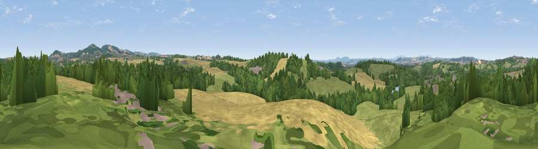

Viewpoint near Blakedown
#23155 in England · top 39% of its area beats it · near Blakedown · path 278 mWhere it is
The exact computed spot (SO 88975 77975). Click the marker for map links.
Public access: the nearest public right of way is about 278 m away — the final stretch may cross private land. Computed from Natural England's CRoW access layer and OpenStreetMap rights of way — not the legal definitive map. Always verify locally.
The view, rendered

A 360° render of this exact spot computed from the terrain model, tree cover and land cover — summer colours, afternoon light, calibrated against photographs of famous viewpoints. Real trees, hedges and buildings will differ in detail.
The panorama
Grey silhouette: terrain skyline in each direction (720 bearings, Earth curvature and refraction included). Dashed green: skyline with trees (+15 m) and buildings (+8 m) as obstacles. Blue strip: how far the ground is visible on each bearing.
Where the view opens
Wedge length = distance to the farthest visible ground on that bearing (vegetation-aware). Rings at 10, 25 and 50 km.
What fills the view
37% woodland · 31% grassland · 27% cropland · 5% built-up
Angular shares of the visible panorama (visual magnitude), not map area. Landscape diversity 0.54 (0–1 Shannon).
Key numbers
More beautiful places nearby
The staircase of upgrades: each row has a higher view potential than everything closer. Driving times are estimates from straight-line distance, calibrated against real road routing — check an actual route before setting out.
| Place | Direction | Drive | Score |
|---|---|---|---|
| Viewpoint near Blakedown | SSW · 1 km | ~3 min | 54.4 |
| Viewpoint near Drayton | SSE · 3 km | ~8 min | 55.3 |
| Wychbury Hill | NE · 5 km | ~11 min | 68.0 |
| Viewpoint near Clent | ENE · 5 km | ~11 min | 74.3 |
| Viewpoint near Abberley | SW · 17 km | ~29 min | 77.5 |
| Viewpoint near Abberley | SW · 17 km | ~30 min | 78.1 |
| Abberley Hill | SW · 17 km | ~30 min | 80.4 |
| Viewpoint near Great Witley | SW · 19 km | ~33 min | 83.4 |
52.39968, -2.16346 · source: screening · position refined by local search. Computed location — check access rights before visiting.